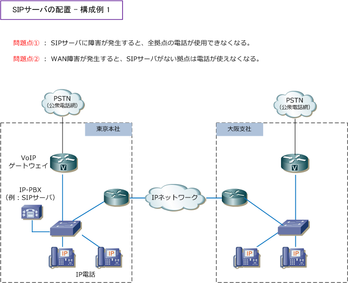
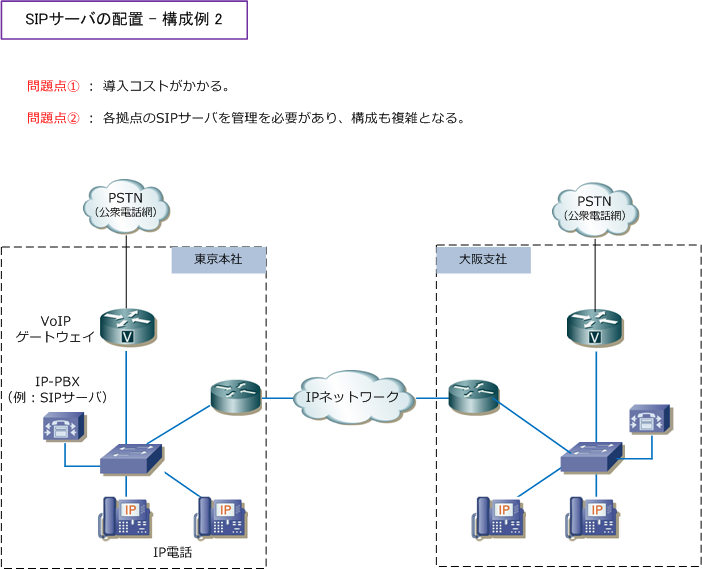
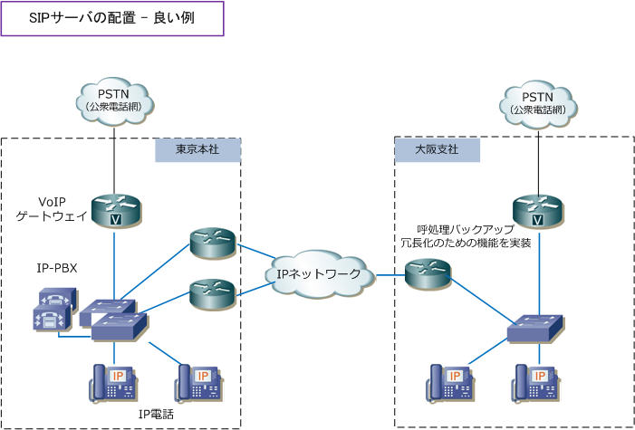
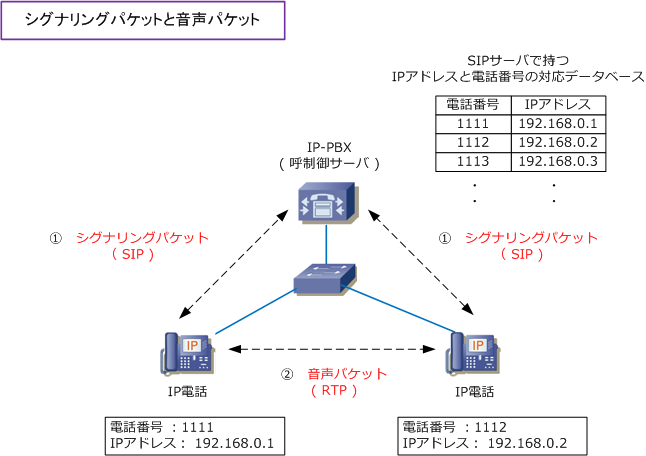
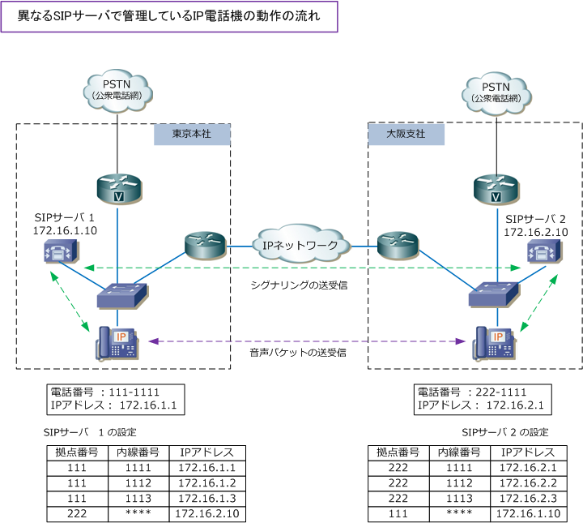
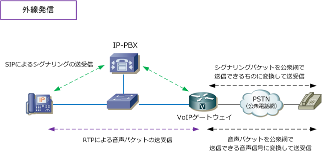

IP Telephony Network
IPテレフォニーシステムの構成 - SIPサーバの配置
IPテレフォニーシステムでは、IP電話、PoEスイッチ、VoIPゲートウェイ、IP-PBXの4つで構成されます。 IP-PBXでは呼制御プロトコルとしてSIPを使用する機種が多くなってきており、ここではIP-PBXイコール SIPサーバとして説明を行っていきます。IP電話機の呼制御（ 通話の制御 ）を行うSIPサーバは、複数の 企業拠点がある場合でも、1台のSIPサーバでも、全ての拠点のIP電話の呼制御を行うことが可能ですが、 例えば下図の構成では、WAN障害が発生するとSIPサーバに到達性がなくなるので通話できなくなります。

一方、1拠点に1台のSIPサーバを配置する構成では、コスト面や構成の複雑さでのデメリットもあります。

一般的に中規模ネットワークなら、センター拠点あるいはデータセンターに冗長化した2台のSIPサーバ を配置して、SIPサーバを配置するセンター拠点やデータセンターに接続するWAN回線を冗長化させる 構成が一般的です。以下の2拠点構成だとそのメリットが分かりにくいですが、これが10拠点にもなれば そのメリットが大きくなっていきます。また、SIPサーバをセンター拠点で冗長化するのは必須ですが、 各拠点のWAN回線は冗長化せずに、各拠点では、SIPサーバではなくSIPサーバよりも安価な呼制御の バックアップ冗長化のための機能を有する機器を導入します。これによりWAN障害時も音声通話が可能。

IPテレフォニーシステムの構成 - IP電話機の動作の流れ
IPテレフォニーシステムにおいて、IP電話機は以下のフローで起動して、自身の電話番号を取得できます。
?@ IP電話機をPoEスイッチに接続することで、電源供給を受けてIP電話機が起動する。 ?A IP電話機がDHCPサーバによって、IPアドレス情報およびSIPサーバのアドレス情報を取得する。 ?B IP電話機はSIPサーバへSIP REGISTERメッセージを送信して、SIPサーバから自身の電話番号を取得。
次に、同じSIPサーバ配下にいるIP電話機は、以下のフローで音声通話を実現することができます。
?@ IP電話機で通話先となる電話番号を押すことで、SIPサーバにSIP INVITEメッセージが送信される。 ?A SIPサーバではIP電話機の電話番号とIPアドレスの対応データを持っており、SIPサーバから通話先の IP電話機の電話番号へSIP INVITEメッセージを送信。このメッセージを受信したIP電話機は着信音がなる。 ?B 着信音の鳴っているIP電話の受話器を取ると音声通話を行えます。これでシグナリングプロセスが完了。 ?C RTPで転送されるVoIPパケットはIP電話機同士で直接やりとりして、SIPサーバを介さず音声通話を行う。

※ RTPパケットから通話先のIPアドレス情報が取得できて、SIPパケットからは通話先の電話番号情報が得られます。
IPテレフォニーシステムの構成 - 異なるSIPサーバで管理しているIP電話機の動作の流れ
拠点ごとにSIPサーバが配置されている構成にて、通話元と通話先のIP電話機が異なるSIPサーバで管理 されている場合、シグナリング時に通話元のIP電話機を管理しているSIPサーバから、通話先のIP電話機 を管理しているSIPサーバへSIP INVITEメッセージが送信されます。この構成の前提として、SIPサーバ には、他拠点に配置したSIPサーバのIPアドレスと管理する電話番号の範囲を定義しておく必要があります。

公衆網への外線発信
SIPサーバにVoIPゲートウェイのIPアドレスを設定することで、IP電話機で入力した電話番号情報に 基づいて、外線発信するために、SIPサーバからVoIPゲートウェイに、SIPINVITEメッセージを転送。
そのSIPメッセージを受信したVoIPゲートウェイは、公衆電話網のシグナリングメッセージに変換して 社外の電話機へとシグナリングが送信されます。通話先で受話器を取ると、通話元のIP電話機は、VoIP ゲートウェイのIPアドレスを認識できることから、音声パケットはVoIPゲートウェイに直接送られます。
